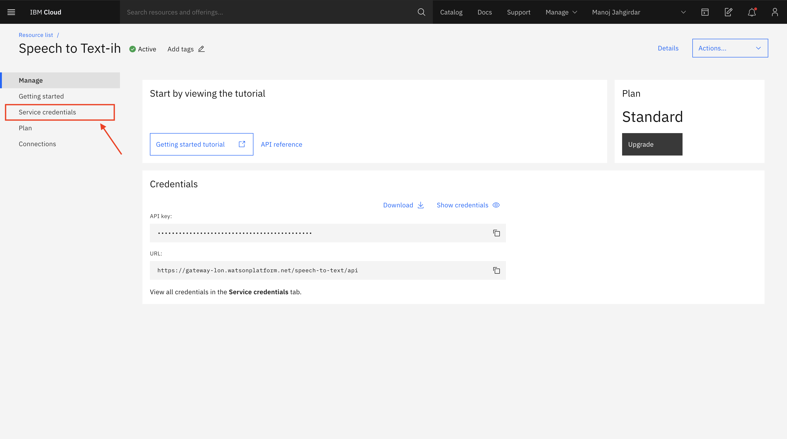
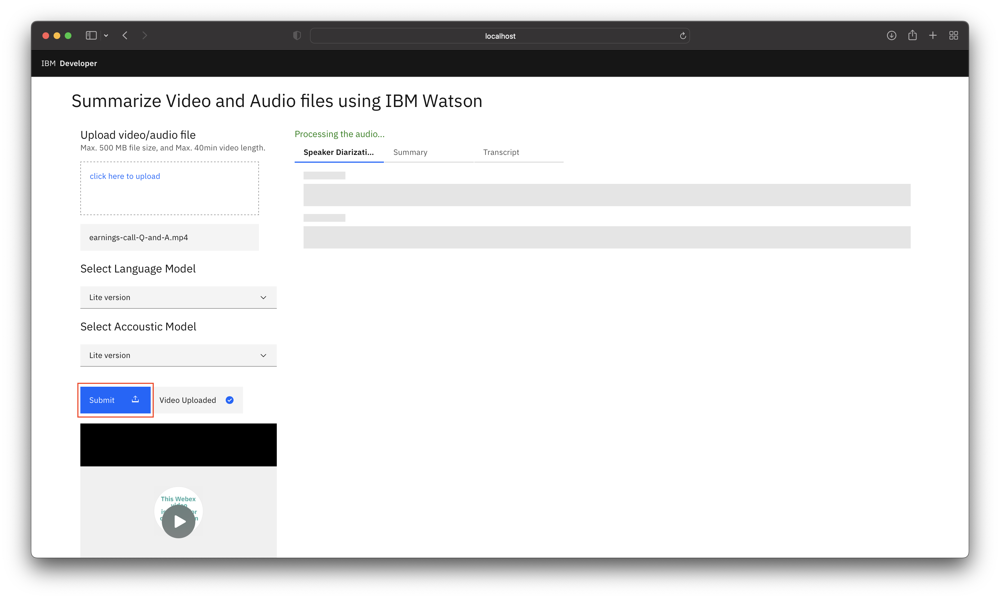
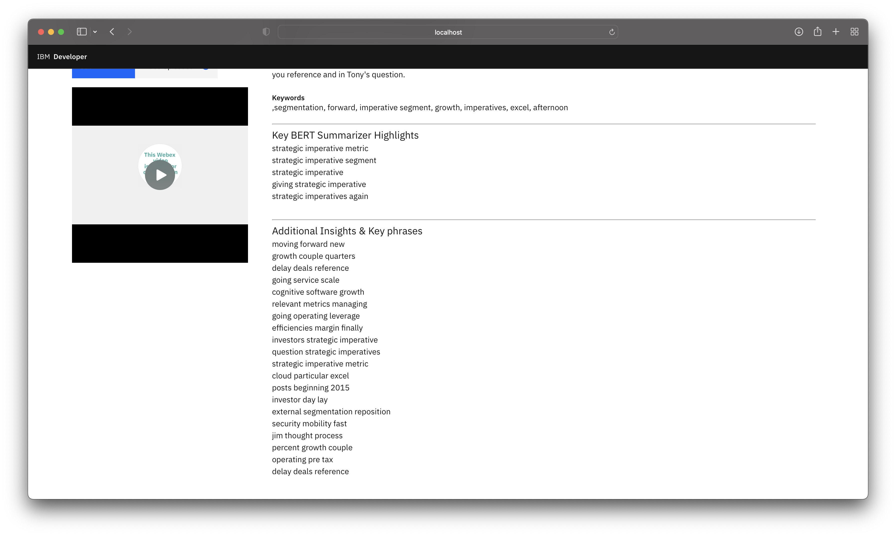
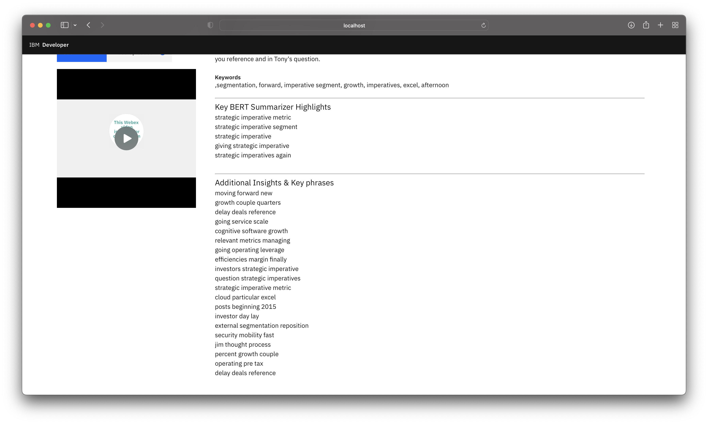

Summarize a video or audio file using IBM Watson
In this code pattern, you will learn to build an end to end framework for generating summaries & insights from video and/or audio files using a combination of IBM and Open source technologies.
Its always beneficial if we can get a gist of the content without going through the entire data and the problem adds more complexity if the data is in the form of a video or audio file. In this code pattern you will learn about building a robust solution for analyzing the video or audio files to quickly generate meaningful summary & insights using different Deep learning and Machine learning approaches. You will also learn about improving the readibility of the transcripts with IBM Watson Speech to Text speech recognition models, how to optimize the parameteres, train different speech to text models and learn about different state of the art language models used for summarizing the text.
When you have completed this code pattern, you will understand how to:
- Use Watson Speech to Text service to convert the human voice into the written word.
- Transcribe video/audio with greater readibility by tuning the Watson Speech to Text parameters.
- Generate summary, highlights & insights using Transformer & ML based models.
- Visualize the results on the GUI for quick consumption and analysis.

Flow
- User uploads a video or audio file.
- If it is a video, then audio is extracted from the video.
- The audio is sent to Watson Speech to Text that transcribes the audio to text.
- The text is processed to extract summary, keywords & insights with different approaches.
- The speaker diarization, summary and transcript are displayed on the UI.
- User can then download the insights.
Watch the Video
Steps
- Clone the repo
- Create Watson Services
- Run the Application
- Generate summary and insights from the data
- Watson Speech to Text Optimization
- Summarizer Models Optimization
1. Clone the repo
Clone the video-summarizer-using-watson repo locally. In a terminal, run:
git clone https://github.com/IBM/video-summarizer-using-watson.git
Application Directory structure
The Application is built on Python Flask Framework.
-
The directory structure is as follows:
. ├── Dockerfile ├── LICENSE ├── Notebooks │ ├── IBM Watson Speech to Text custom model training.ipynb │ └── Summarize.ipynb ├── Procfile ├── README.md ├── apis │ ├── init.py │ ├── summarizer.py │ ├── videoUtils.py │ └── watsonSpeechToText.py ├── app.py ├── deploy.yaml ├── manifest.yml ├── requirements.txt ├── static │ ├── audios │ ├── chunks │ ├── credentials │ │ └── speechtotext.json │ ├── css │ │ └── style.css │ ├── images │ ├── js │ │ └── script.js │ ├── transcripts │ └── videos │ └── wc.png └── templates └── index.html -
apis/contains the API endpoints. /api/v1.0/uploadVideo: This API is used to upload the video file, extract audio from the video file, detect long pauses in the audio file and split the audio file into chunks./api/v1.0/transcribe/<string:model>: This API is used to transcribe the audio files using Watson Speech to Text./api/v1.0/summarize: This API is used to summarize the text using GTP-2, Gensim and XLNET summarizers.static/contains the following static files.credentials/contains the credentials for Watson Speech to Text.videos/contains the uploaded video files.audios/contains the extracted audio files.transcripts/contains the transcribed text files.chunks/contains the audio chunks.css/contains the CSS files.js/contains the JavaScript files.templates/contains the HTML templates.app.pyis the main application file to run the flask server.Dockerfileis the Dockerfile to build the Docker image.requirements.txtis the list of requirements for the application.deploy.yamlis the deployment configuration file.
2. Create Watson Services
2.1. Create Watson Speech to Text service on IBM Cloud
-
Login to IBM Cloud, create a Watson Speech To Text Service, and click on
createas shown.
-
In Speech To Text Dashboard, Click on
Services Credentials.  -
Click on
New credentialand add a service credential as shown.
-
Copy the credentials.
2.2. Add Watson Speech to Text credentials to the application
-
Add the Watson Speech to Text credentials in the
static/credentials/speechtotext.jsonfile.{ "apikey": "xxxx", "iam_apikey_description": "xxxx", "iam_apikey_name": "xxxx", "iam_role_crn": "xxxx", "iam_serviceid_crn": "xxxx", "url": "xxxx" }
3. Run the Application
You can choose to run the application Locally or deploy on Red Hat OpenShift or deploy on IBM Public Cloud Foundry.
Locally
* Navigate to the root of the cloned repo. In terminal, run the following command:docker build -t video-summarizer-using-watson:v1.0 .
docker run -p 8080:8080 video-summarizer-using-watson:v1.0
Red Hat OpenShift
### Steps to Build and Deploy on OpenShift #### Build > Note: Make sure you have docker cli installed and logged in to DockerHub * In cloned repo, build the docker image. In terminal run:docker build -t <your-docker-username>/video-summarizer-using-watson:v1.0 .
docker push <your-docker-username>/video-summarizer-using-watson:v1.0
spec:
containers:
- name: video-summarizer-using-watson
image: < your-docker-username >/video-summarizer-using-watson:v1.0
ports:
- containerPort: 8080
oc login -u <username> -p <password>
oc apply -f deploy.yaml
deployment.apps/video-summarizer-using-watson-deployment created
service/video-summarizer-using-watson-service created
oc get services | grep video-summarizer-using-watson-service
NAME TYPE CLUSTER-IP EXTERNAL-IP PORT(S) AGE
video-summarizer-using-watson-service LoadBalancer 172.21.170.157 169.60.236.228 80:32020/TCP 2m
IBM Public Cloud Foundry
### Steps to Build and Deploy on IBM Public Cloud Foundry #### Build and Deploy * Before you proceed, make sure you have installed [IBM Cloud CLI](https://cloud.ibm.com/docs/cli?topic=cloud-cli-getting-started&locale=en-US) in your deployment machine. > Note: You need to set the `disk-quote` to be more than 2GB since pytorch library is huge and requires more than 2GB of disk space to get installed. * From the cloned repo, in terminal, run the following commands to deploy the Application to IBM Cloud Foundry. * Log in to your IBM Cloud account, and select an API endpoint.ibmcloud login
ibmcloud login --sso
ibmcloud target --cf
ibmcloud cf push video-summarizer-using-watson
Invoking 'cf push'...
Shown below is a sample output
Pushing from manifest to org abc@in.ibm.com / space dev as abc@in.ibm.com...
...
Waiting for app to start...
name: video-summarizer-using-watson
requested state: started
routes: video-summarizer-using-watson.xx-xx.mybluemix.net
last uploaded: Sat 16 May 18:05:16 IST 2020
stack: cflinuxfs3
buildpacks: python
type: web
instances: 1/1
memory usage: 4G
start command: python app.py
state since cpu memory disk details
#0 running 2020-05-16T12:36:15Z 12.6% 116.5M of 4G
4. Generate summary and insights from the data
- Upload any video/audio file. (.mp4/.mov or .mp3/.wav). You can use the dataset provided in the repo data/earnings-call-2019.mp4 or data/earnings-call-Q-and-A.mp4

About the Dataset
For the code pattern demonstration, we have considered `IBM Earnings Call Q1 2019` Webex recording. The data has 20+ min of IBM Revenue discussion, and 2+ min of Q & A at the end of the recording. We have split the data into 2 parts: - `earnings-call-2019.mp4` - (Duration - 24:40) This is IBM revenue discussion meeting recording. - `earnings-call-Q-and-A.mp4` - (Duration - 2:40) This is a part of Q & A's asked at the end of the meeting.-
Select the Watson Speech to Text Language and Acoustic Model.

Custom language model is built to recognize the out of vocabulary words from the audio. Learn more
Custom accoustic model is built to recognize the accent of the speaker from the audio. Learn more
NOTE: A Standard account is required to train a custom Speech To Text Model. There are three types of plans, Lite (FREE), Standard and Premium (PAID) for more info visit https://cloud.ibm.com/catalog/services/speech-to-text
You can refer to the IBM Watson Speech to Text custom model training.ipynb notebook to learn in detail how to build and train custom Watson Speech to Text models.
-
Click on submit. 
-
It will take approximately the same amount of time as the duration of the video to process the Speaker Diarized Output, Summary and Transcript.
-
You can view the Speaker Diarized Output.

Speaker Diarization is a process of extracting multiple speakers information from an audio. Learn more
-
You can view the Summary from Gensim, GPT2 & XLNet models which are ML & Transformer based approaches respectively. The insights are generated using KeyBert model. You can refer to this Jupyter Notebook Custom-Models-for-Summarization-and-Insights.ipynb and play around with the different settings of model hyperparameters to increase or decrease the size of the output to suit your requirements.
 
 -
You can also view the transcript.

5. Watson Speech to Text Optimization
The Watson Speech to Text model can be optimized further to get more precise and accurate results. In this section you will learn about the following speech recognition parameters of the Watson Speech to Text: - Speaker labels (Beta) - Smart formatting - End of phrase silence time - Numeric redaction (Beta) - Profanity filtering (Beta)
Speaker Labels (Beta)
Speaker labels parameter in Watson™ Speech to Text, identifies which person spoke which words in a conversation. It is best optimized for two person conversation scenario, however it can support upto 6 person but the performance may vary.
Example: Telephone conversation between two people, Q&A between two people, etc.
To enable Speaker labels, add the speaker_labels parameter and set it to true.
def Transcribe(audiofilepath):
with open(audiofilepath, 'rb') as audio_file:
speech_recognition_results = speech_to_text.recognize(
audio=audio_file,
content_type='audio/wav',
model='en-US_NarrowbandModel',
speaker_labels=True
).get_result()
return speech_recognition_results
Note: We are using an US English NarrowBand Model to transcribe the audio. NarrowBand Model is optimized for human to human conversations, whereas, BroadBand Model is optimized for human to bot or vice-versa conversations. Change your model accordingly.
Note: Speaker Labels is already enabled in this code pattern. ✔️
Learn more about Speaker Labels here.
Smart formatting
Smart formatting parameter in Watson™ Speech to Text, converts the following strings into more conventional representations: - Dates - Times - Series of digits and numbers - Phone numbers - Currency values (for US English and Spanish) - Internet email and web addresses (for US English and Spanish)
Example:
| String Type | Smart formatting OFF ❌ | Smart formatting ON ✔️ |
|---|---|---|
| Dates | I was born on the ninth of December nineteen hundred | I was born on 12/9/1900 |
| Times | The meeting starts at nine thirty AM | The meeting starts at 9:30 AM |
| Numbers | The quantity is one million one hundred and one dollar | The quantity is $1000101 |
| Phone numbers | Call me at nine one four two three seven one thousand | Call me at 914-237-1000 |
| Internet email and web addresses | My email address is john dot doe at foo dot com | My email address is john.doe@foo.com |
| Combinations | The code is zero two four eight one and the date of service is May fifth two thousand and one | The code is 02481 and the date of service is 5/5/2001 |
To enable Smart formatting, add the smart_formatting parameter and set it to true.
def Transcribe(audiofilepath):
with open(audiofilepath, 'rb') as audio_file:
speech_recognition_results = speech_to_text.recognize(
audio=audio_file,
content_type='audio/wav',
model='en-US_NarrowbandModel',
speaker_labels=True,
smart_formatting=True
).get_result()
return speech_recognition_results
Note: Speaker Labels is already enabled in this code pattern. ✔️
Learn more about Smart formatting here.
End of phrase silence time
End of phrase silence time parameter in Watson™ Speech to Text, specifies the duration of the pause interval at which the transcript has to be split. This parameter improves the sentence formation in the transcript.
Example:
If a person speaks numbers such as one two three four with a pause between three and four, the transcript would be something like this if the End of phrase silence time not set:
"One two three"
"four"
However if the End of phrase silence time is set to say 1sec or 1.5sec then the transcript would be something like this:
"One two three four"
To enable End of phrase silence time, add the end_of_phrase_silence_time parameter and set it to desired time for example 1.5sec.
def Transcribe(audiofilepath):
with open(audiofilepath, 'rb') as audio_file:
speech_recognition_results = speech_to_text.recognize(
audio=audio_file,
content_type='audio/wav',
model='en-US_NarrowbandModel',
speaker_labels=True,
smart_formatting=True,
end_of_phrase_silence_time=1.5
).get_result()
return speech_recognition_results
Note: End of phrase silence time is already enabled in this code pattern. ✔️
Learn more about End of phrase silence time here.
Numeric redaction (Beta)
Numeric redaction parameter in Watson™ Speech to Text, masks the numeric data from final transcripts. It is a useful feature when dealing with PII data.
Example:
| Numeric redaction OFF ❌ | Numeric redaction ON ✔️ |
|---|---|
| my credit card number is four one four seven two nine one three one seven eight two seven nine two six | my credit card number is xxxx-xxxx-xxxx-7926 |
To enable Numeric redaction, add the redaction parameter and and set it to true.
def Transcribe(audiofilepath):
with open(audiofilepath, 'rb') as audio_file:
speech_recognition_results = speech_to_text.recognize(
audio=audio_file,
content_type='audio/wav',
model='en-US_NarrowbandModel',
speaker_labels=True,
smart_formatting=True,
end_of_phrase_silence_time=1.5,
redaction=True
).get_result()
return speech_recognition_results
Learn more about Numeric redaction here.
Profanity filtering (Beta)
Profanity filtering parameter in Watson™ Speech to Text, censors profanity from its results. It is enabled by default, you can disable the feature if you want the words in the output exactly as transcribed.
Example:
| Profanity filtering OFF ❌ | Profanity filtering ON ✔️ |
|---|---|
| Fword you | **** you |
To disable Profanity filtering, add the redaction parameter and and set it to false.
def Transcribe(audiofilepath):
with open(audiofilepath, 'rb') as audio_file:
speech_recognition_results = speech_to_text.recognize(
audio=audio_file,
content_type='audio/wav',
model='en-US_NarrowbandModel',
speaker_labels=True,
smart_formatting=True,
end_of_phrase_silence_time=1.5,
redaction=True,
profanity_filter=False
).get_result()
return speech_recognition_results
Learn more about Profanity filtering here.
6. Summarizer Models Optimization
The approaches used for extractive summarization are based on Transformer & Machine Learning.
Transformer
This approach pays equal attention to the words in the data and establish a relation between the words which are far from each other. Transformer approach works on attention mechanism to generate highly accurate and cohesive summary which can capture the context well and generate meaningful insights.
Hyperparameters
We can adjust the summary size by setting the ratio (0.1 till 1 where the ideal setting would be ratio=0.2). We can also control the summary size by using the num_sentences parameter (ex:- num_sentences=10) to manually update the number of sentences to be present in the summarized output. There are a lot of other parameters that can be adjusted for different tasks like classification, sentence generation etc and for summarization the above mentioned parameters should ideally suffice. We can also re-train the models if required by referring to the link below.
Learn more about Transformers here.
Machine Learning
This approaches uses Gensim module for generating extractive summary. It uses the text rank algorithm to select the sentences on basis of the ranking of sentences in a specific order. Its a light weight module and can run on any setup (Cloud or local).
Hyperparameters
We can control the summary size by using the ratio parameter (ex:- ratio=0.2) and word_count (ex:- word_count=250) parameter. This method is useful for generating quick summary and keywords and might need skilled inference to consume the output.
Summary
In this code pattern you learned how to create an integrated system to convert speech to text, generate summary and insights from a video or audio file. You also learned about improving the readibility of the transcripts by tuning the parameters of Watson Speech to Text and finally you learned about different state of the art language models used for summarizing the text.
This solution has wider applicability across domains to gather insights quickly from different data formats. This solution will be beneficial for Developers, Data Scientists & Architects to understand the Transformer based architecture & Watson Speech to Text capabilities to embed them in different apps to solve complex business problems associated with unstructured data.
License
This code pattern is licensed under the Apache License, Version 2. Separate third-party code objects invoked within this code pattern are licensed by their respective providers pursuant to their own separate licenses. Contributions are subject to the Developer Certificate of Origin, Version 1.1 and the Apache License, Version 2.